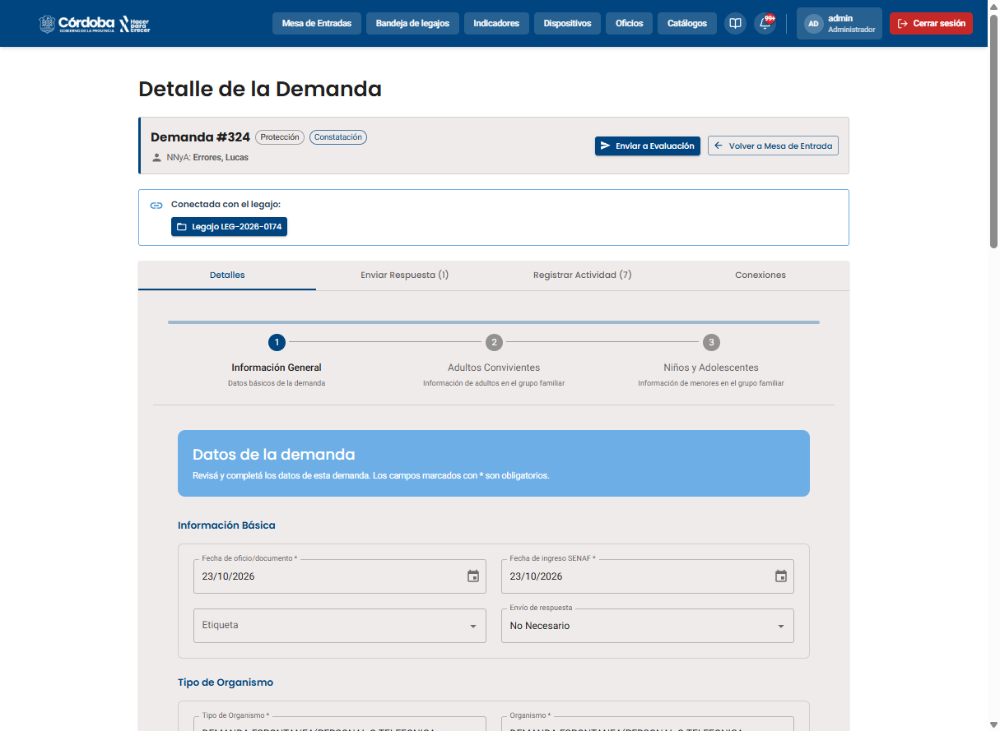
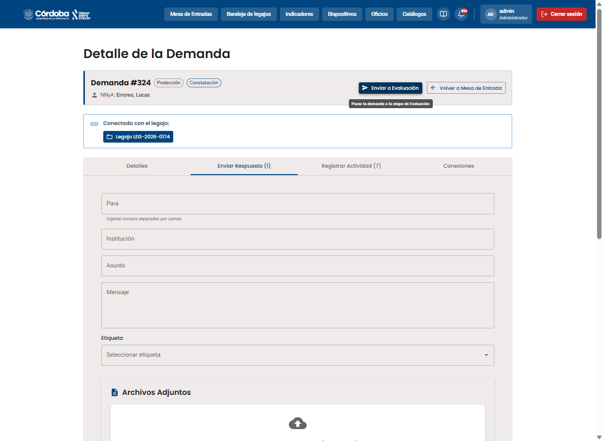
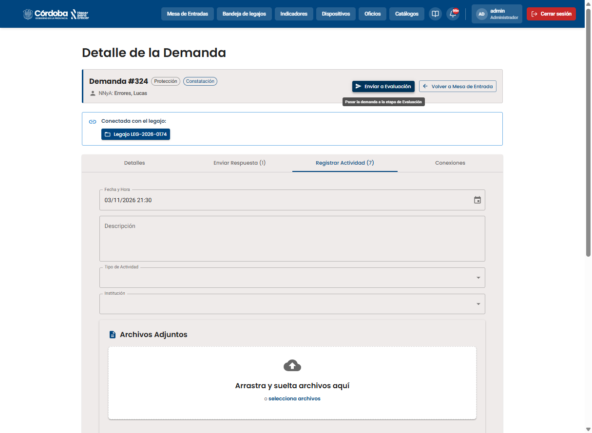
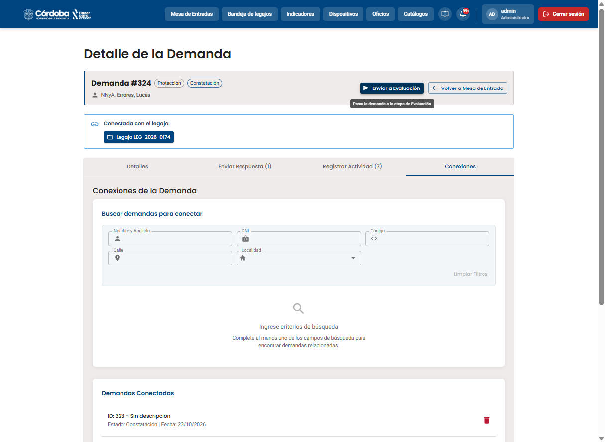
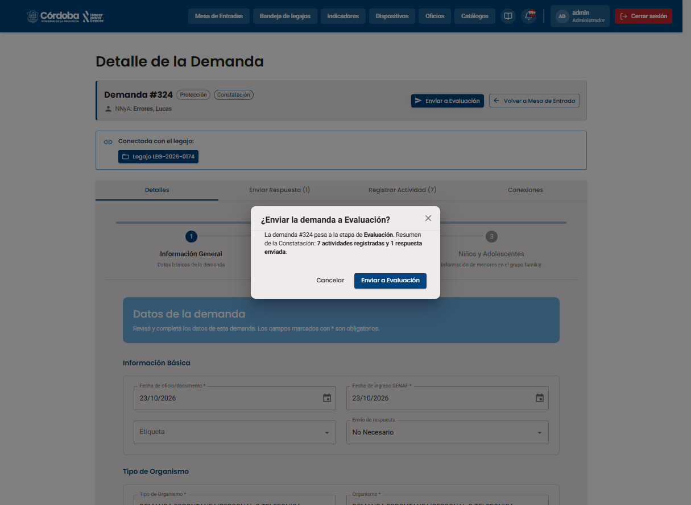

Etapa 3 de 10
🔍 Constatación
Cuando una demanda de Protección queda derivada a un técnico, entra en estado Constatación: acá es donde se investiga y documenta lo que está pasando con el NNyA antes de decidir si corresponde una medida. Todo esto se hace dentro de la pantalla "Detalle de la Demanda", que tiene 4 pestañas.
Paso 1 de 6
Constatación

1
Revisá y completá los Detalles
Al abrir la demanda, el encabezado muestra el número, el objetivo (Protección), la etapa (Constatación) y el NNyA. Arriba a la derecha están "Enviar a Evaluación" y "Volver a Mesa de Entrada": el botón de enviar está siempre a la vista, desde cualquier pestaña. La pestaña "Detalles" dice "Datos de la demanda — Revisá y completá los datos de esta demanda" y muestra el mismo formulario de 3 pasos de la creación (Información General, Adultos Convivientes, Niños y Adolescentes). Las pestañas llevan contador (por ejemplo "Enviar Respuesta (1)" y "Registrar Actividad (7)") que se actualiza solo. Los campos marcados con * son obligatorios.
📸 Captura: 0188-constatacion-detalles-enviar-a-evaluacion.png

2
Enviá una respuesta a una institución
La pestaña "Enviar Respuesta" sirve para comunicarse con instituciones u organismos: se completa el destinatario (Para), la Institución, el Asunto, el Mensaje, una Etiqueta opcional y se pueden adjuntar archivos. Antes de enviar, el sistema pide una confirmación («Se enviará un correo a … Una vez enviado no se puede deshacer»). Todo queda guardado en el Historial de Respuestas, debajo; si todavía no se envió nada dice «Todavía no se envió ninguna respuesta».
📸 Captura: 0190-constatacion-enviar-respuesta.png

3
Registrá una actividad de campo
En "Registrar Actividad" se documenta cada intervención: fecha y hora, una descripción (por ejemplo "se visitó a la familia"), el tipo de actividad (como "Entrevista a la familia/referentes significativos"), la institución involucrada y los archivos de respaldo. Al guardar aparece el aviso "Actividad registrada con éxito" y el contador de la pestaña sube. Esta es la tarea que más va a repetir un técnico durante la Constatación.
📸 Captura: 0191-constatacion-registrar-actividad.png

4
Conectá la demanda con otros casos
La pestaña "Conexiones" permite buscar otras demandas relacionadas (por nombre, DNI, código, calle o localidad; la calle se busca junto con la localidad, así que elegí también la localidad) y también crear un vínculo con un legajo ya existente, si el NNyA o su grupo familiar ya tienen un caso abierto. Una demanda ya conectada aparece como "Ya conectada". Para desconectar, el sistema pide confirmación (las demandas no se borran y podés volver a conectarlas).
📸 Captura: 0192-constatacion-conexiones.png

5
Enviá la demanda a Evaluación
Cuando la investigación está lista, hacé clic en "Enviar a Evaluación", en el encabezado. Aparece una confirmación con un resumen de la constatación: «La demanda #N pasa a la etapa de Evaluación. Resumen de la Constatación: 7 actividades registradas y 1 respuesta enviada». Si el botón está deshabilitado, un texto explica por qué. Al confirmar, el estado pasa de "Constatación" a "Evaluación" y aparece el botón verde "Evaluar" en la Mesa de Entradas. Ahí el técnico completa la valoración y decide la medida: es el tema del próximo tutorial.
📸 Captura: 0189-constatacion-confirmar-envio-a-evaluacion.png
✅ Ya sabés cómo se documenta la Constatación de una demanda en RUNNA.

6
Si la demanda ya está en Evaluación
Al hacer clic en una demanda que ya está en Evaluación, se abre un aviso "Demanda #N en evaluación" con dos opciones: "Ver constatación" (revisar lo que se cargó) o "Ir a la evaluación" (solo para quien puede evaluar; el resto abre el detalle como siempre).
📸 Captura: 0193-demanda-en-evaluacion-modal.png
🖐️ Practicá vos mismo/a
Registrá tu primera actividad de Constatación, como lo harías en la pestaña "Registrar Actividad" del sistema real.
Registrar Actividad
✅ Actividad registrada correctamente.
Checklist de la práctica
- Escribiste una descripción
- Elegiste un tipo de actividad
- Registraste la actividad